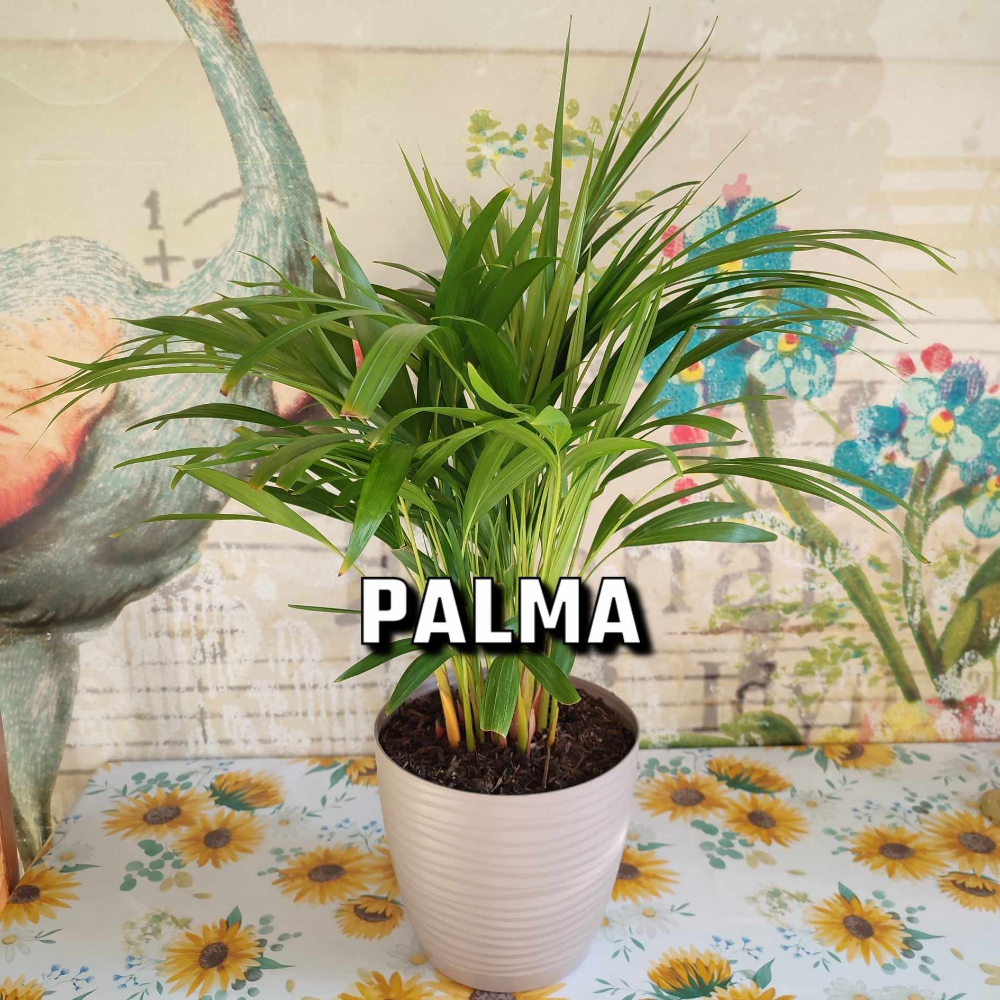
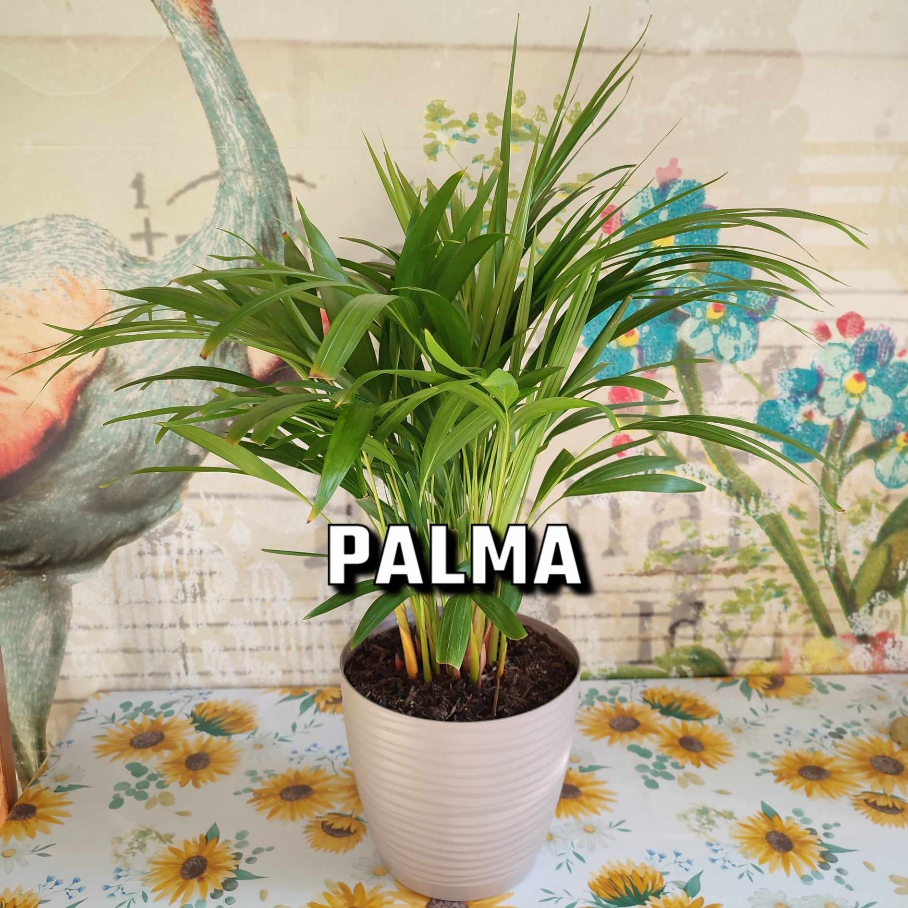

Bluszcz
💧 min. raz na dwa tygodnie
⛅ światło rozproszone / półcień
Bluszcz łatwo adaptuje się w niemal każdych warunkach rozwojowych. Może rosnąć zarówno w słońcu, jak i cieniu, w dodatku nawet w miejscach suchych. Preferuje jednak stanowiska pół-cieniste do cienistych, gdzie utrzymuje się umiarkowana wilgotność powietrza, a ziemia jest żyzna i próchniczna.
Wszystkie bluszcze lubią glebę dobrze nawodnioną, co oznacza, że należy podlewać je dość często. Wiosną i latem, w okresie wegetacyjnym, podłoże powinno być stale umiarkowanie wilgotne – rośliny należy podlewać wodą o temperaturze pokojowej. Ze wględu jednak na niewielkie rozmiary sadzonki a zatem mniejsze zapotrzebowanie na wodę wystraczy podlanie około raz tydzień-dwa.
Bluszcz lubi podłoże dosyć wilgotne. Kiedy jest uprawiany w pojemniku, musi być częściej podlewany, niż roślina ogrodowa. Przed podaniem kolejnej dawki wody należy pozwolić wierzchniej warstwie gleby na podsuszenie.
Sprawdź wymagania pozostałych roslin:


 
